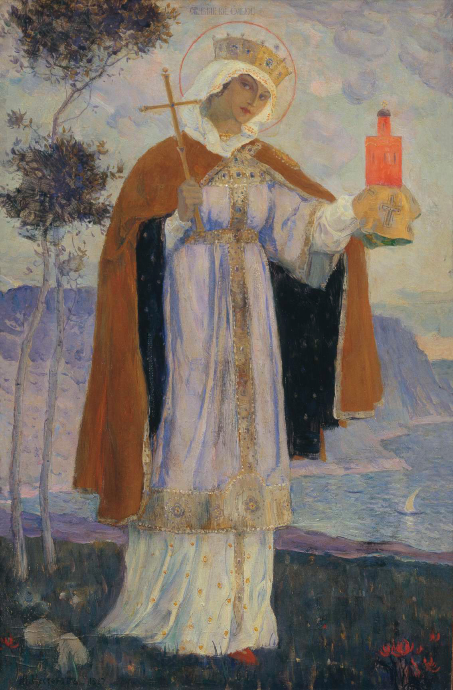
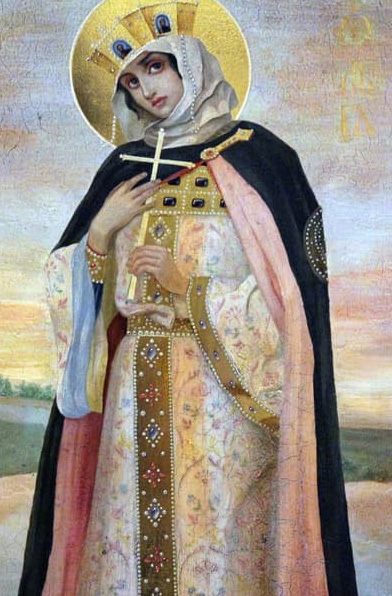
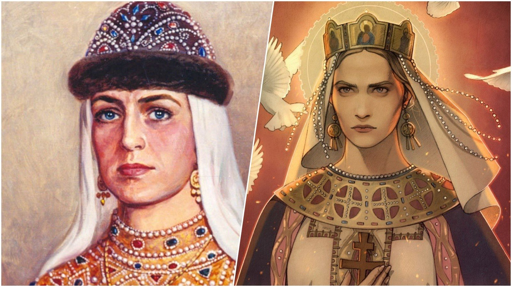
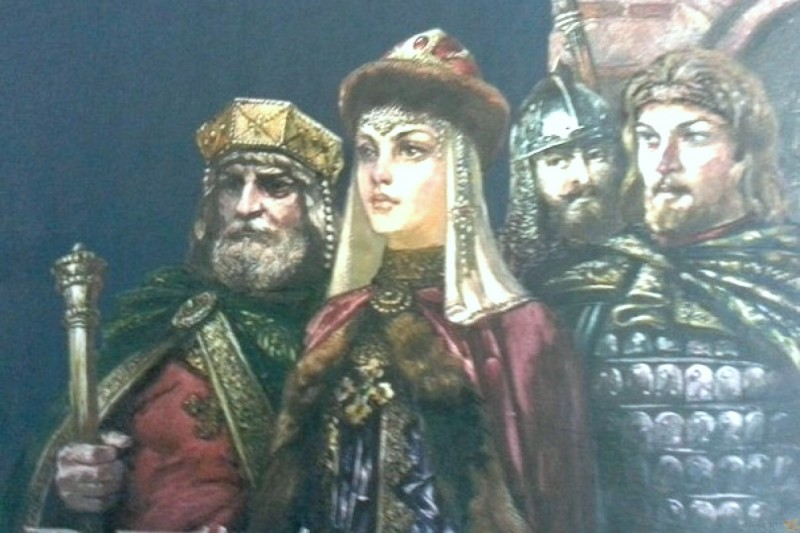
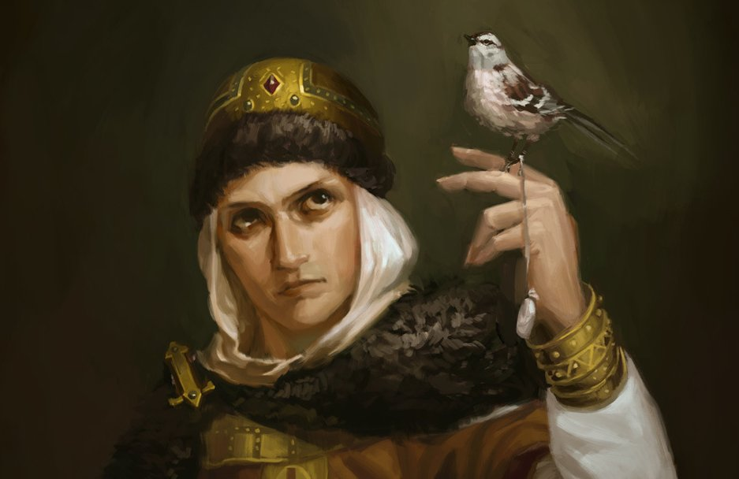
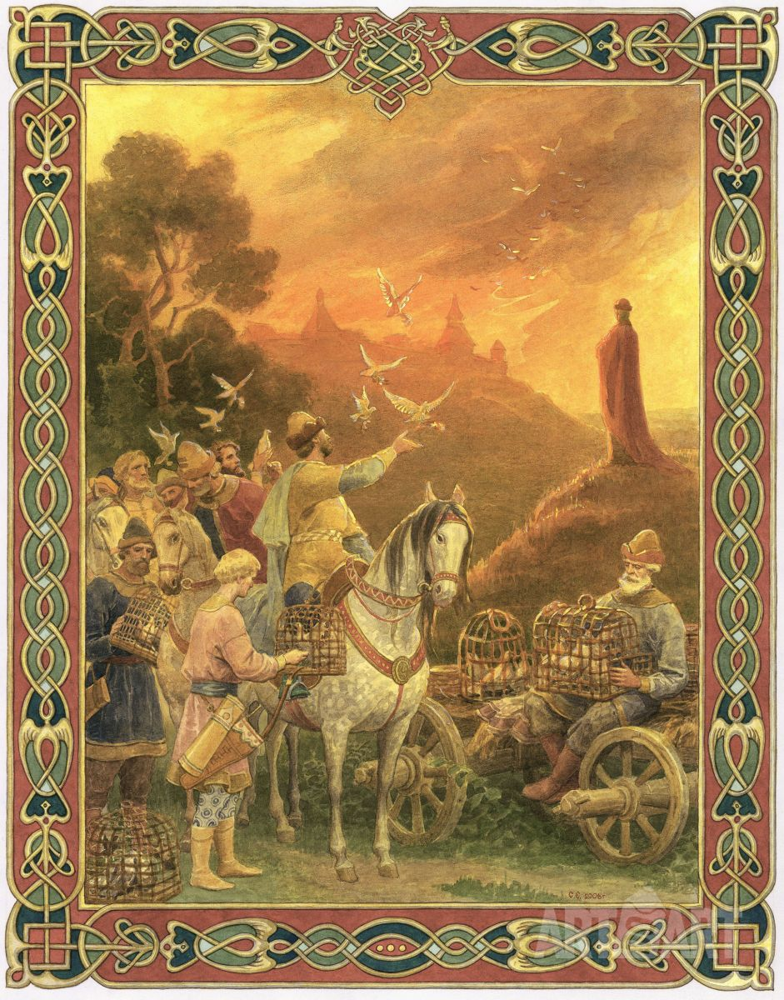
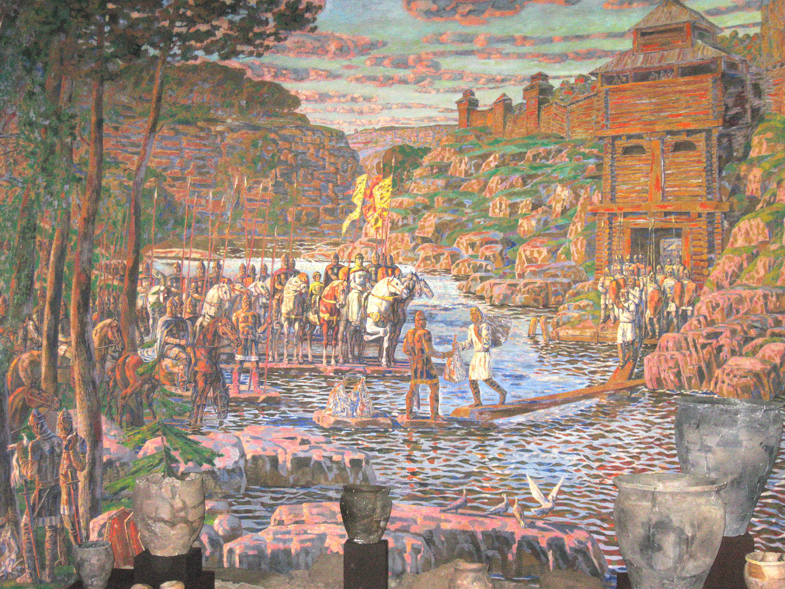
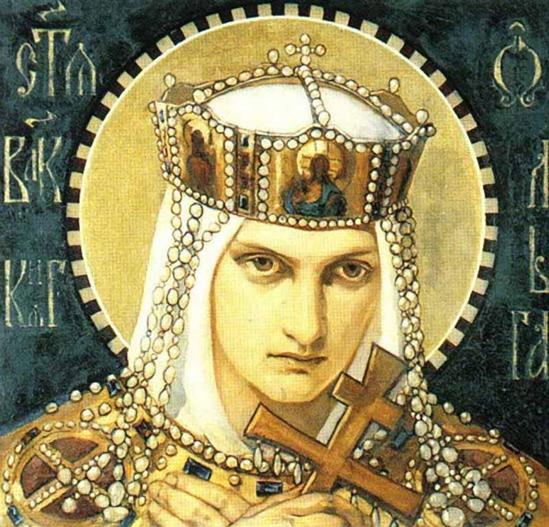

Княгиня Ольга — правительница Киевской Руси с 945 до 960 года.
Пришла к власти после смерти своего супруга князя Игоря от рук племени древлян.
По установленному порядку бразды правления должен был получить сын князя,
Святослав. Однако тот был слишком юн для такого дела. Согласно летописным источникам княгиня Ольга отличалась незаурядным умом и хитростью.
Будучи регентом (временным правителем) при малолетнем сыне, вела грамотную внутреннюю и внешнюю политику.
В историю помимо прочего княгиня вошла как первая из русских правителей, принявшая христианство, что было невероятно для раннего времени.
Это произошло немногим ранее того, как Владимир объявил православие общепринятой религией.
Широко известен эпизод мести правительницы убийцам своего мужа.
Обстоятельства, однако, не понятны, само же деяние окутано легендами.
Однако то, что оно имело место — подтвержденный факт.
Согласно летописным источникам княгиня Ольга отличалась незаурядным умом и хитростью.
Будучи регентом (временным правителем) при малолетнем сыне, вела грамотную внутреннюю и внешнюю политику.
В историю помимо прочего княгиня вошла как первая из русских правителей, принявшая христианство,
что было невероятно для раннего времени. Это произошло немногим ранее того,
как Владимир объявил православие общепринятой религией.
В ее честь названы улицы, в нескольких городах установлены памятники.
Княгиня Ольга стала женой князя Игоря. После рождения, ее назвали Хельга,
но муж решил дать ей другое имя. Имя, которое прославило женщину,
она получила после своего крещения.


Крещение княгини
Ольги в Константинополе принятие христианства из Византии в 957 году
Согласно летописи Ольга совершила путешествие в Византию в 955 году, однако Константин VII Багрянородный
в своём сочинении “О церемониях” упоминает визит княгини в Константинополь под 957 годом
и именно эта дата традиционно считается временем крещения княгини
Смена религии первым лицом государства была сильнейшим пропагандистским фактором —
Ольга исполняла обязанности регента при своём малолетнем сыне Святославе,
и её крещение подталкивало подданных к повторению поведения лидера.
Принятие крещения в Константинополе при содействии самого императора также добавляло
политического веса как самой Ольге (становящейся таким образом крестной дочерью императора),
так и союзу с Византией, торговля с которой была одним из существенных каналов дохода киевских князей.
В крещении Ольге было дано имя Елена, и согласно летописям после обряда перехода в новую веру
“русской архонтиссы” император Византии Константин VII Багрянородный предложил Ольге стать его женой,
однако она ответила отказом
Второй прием состоялся 18 октября и был совсем кратким: делегации русов вновь были преподнесены дары и после прощального пира
Ольга отправилась домой. По возвращению в Киев новообращённая княгиня начала активно продвигать христианство
среди восточнославянских племён, приказывая разрушать древние капища и уничтожать статуи славянских богов,
возводя вместо них символы новой религии – кресты.
Если ранее христиане лишь составляли существеную для упоминания в мирных договорах с Византией часть населения, то теперь,
со сменой веры представительницей правящего дома Рюриковичей,
распространение христианства перешло в агрессивную форму.
Свадьба Игоря и Ольги N1
Согласно краткой записи
Повести Временных Лет
в 903 году Олег
поженил молодого князя
на Ольге которой,
которой было на момент
свадьбы 10-12 лет:
В год 6411 (903). Когда Игорь вырос,
то сопровождал Олега
и привели ему жену из Пскова,
именем Ольгу
Существует и другая легенда,
о случайной встрече Ольги
с Игорем на переправе
под Псковом. Князь охотился,
но подойдя к быстрой реке
не смог преодолеть её ввиду
отсутствия лодки.

Свадьба Игоря и Ольги N2
И увидел он некоего
плывущего по реке
в лодейце, и призвал
плывущего к берегу,
и повелел перевезти
себя через реку.
И когда плыли они,
взглянул Игорь на гребца
того и понял,
что это девица.
То была блаженная
Ольга, совсем еще
юная, пригожая
и мужественная.
Пораженный красотой девушки
князь попытался было
завести разговор и склонить её
к любовной связи,
однако получил отпор.
Мстила за смерть супруга
Не многим известно о том, что княгиня Ольга мстила за смерть своего мужа. Она сильно скорбела о нем,
но ее сильный характер не дал ей долго находитьсяв таком состоянии.
После того, как муж Ольги был убит, древляне решили прислать к ней сватов, чтобы звать ее замуж. Но по приказу княгини, ладья, на которой прибыли гости, была отнесена во двор терема. Именно там всех сватов закопали живьем.
После первой выполненной мести, Ольга решила просить, чтобы к ней снова пришли самые лучшие мужчины для будущего замужества. Когда люди прибыли, то были сожжены в бане живьем.
Но и на этом княгиня не остановилась. Однажды вместе со своей дружиной, она прибыла на землю древлян. Во время небольшой трапезы, Ольга напоила всех и велела своим воинам рубить их. В тот день было убито около пяти тысяч человек.
Последнее, что сделала Ольга, так это сожгла столицу вместе с древлянами. Во время летнего периода, она привязывала к птицам средства с зажигательной смесью, а затем отправляла их в город, где проживали эти народы.
Вторая месть
Древляне избрали наиболее благородных представителей и направили в Киев. По приходу княгиня предложила гостям сходить в баню после долгой дороги и после прибыть к ней на приём. Пока новые послы мылись, Ольга приказала своим людям зажечь баню и сожгла древлян.
Последней местью стало сожжение древлянской столицы Искоростеня, после чего оставшиеся в живых древляне были покорены и обязаны вновь выплачивать дань киевским князьям
Третья месть
Прибыв на место княгиня велела насыпать высокий холм на месте могилы мужа, затем начался похоронный пир. Древляне на тризне стали спрашивать, где их ранее посланные делегации, на что получили заверения Ольги о скором их прибытии вместе с частью её дружины.
Когда древляне опьянели, княгиня приказала своим воинам перебить их (летописец указывает 5000 убитых древлян, отдельно отмечая, что были перебиты наиболее знатные представители племени, после чего возвратилась в Киев и начала собирать войска для похода по древлянской земле и подавления оставшихся очагов восстания.


Четвертая месть
В 946 году Ольга собрала большое войско и вместе с сыном Святославом выступила в поход на древлян. Несмотря на предыдущую кровавую расправу на тризне, древляне собрали достаточно воинов, чтобы дать сражение киевлянам. Когда полки сошлись перед битвой, княжич Святослав первым по традиции метнул копьё в сторону противника, но так как был слишком мал – копье лишь пролетело между ушей его коня и ударило в землю перед ним.
Ольга в сопровождении сына направила войска на осаду столицы древлян – Искоростеня, ведь именно близ него был убит её муж Игорь, а другие города приказала осаждать своим воеводам.
Древляне, понимая, что на милость княгини рассчитывать не приходится, отчаянно отбивались из-за высоких стен своей столицы всё лето и спустя множество штурмов Ольга решила, что если силой взять Искоростень невозможно, значит придется вновь идти на хитрость.
Во время очередной передышки между штурмами к древлянам был направлен посланник, передавший от Ольги сообщение:
«До чего хотите досидеться? Ведь все ваши города уже сдались мне и согласились на дань и уже возделывают свои нивы и земли; а вы, отказываясь платить дань, собираетесь умереть с голода».
Изможденные долгой осадой древляне ответили, что и рады бы заключить мир, но боятся новой мести княгини, на что та отвечала:
«Я уже мстила за обиду своего мужа, когда приходили вы к Киеву, и во второй раз, а в третий — когда устроила тризну по своем муже. Больше уже не хочу мстить, — хочу только взять с вас небольшую дань и, заключив с вами мир, уйду прочь».
Позднее летописец Нестор в текст Начального свода добавил врезку, где рассказал, что столица древлян Икоростеня была подвержена осаде в 946 году, а затем Ольга сожгла город дотла. Княгиня якобы попросила у горожан в дань 3 голубя и 3 воробья, привязала к их лапкам горящую ветошь и отпустила обратно к гнездам. В итоге птицы подожгли столицу древлян.

Княгиня Ольга у стен древнего Искоростеня” (художник А.А. Туранский, 1982)
Реформы
Во время военных походов Святослава, княгиня правила страной «железной рукой». Она внедрила много реформ. После победы над дремлянами она начинает строительство домов из камня. Ольга хорошо помнила, как пылала столица ненавистного врага. Одним из первых каменных строений стал её дом, а затем и городской дворец.
Налоговая реформа
Она была проведена с целью укрепить власть Киевского престола, ослабить власть мелких племенных правителей и упорядочить сбор дани. В прошлом эта дань, так сказать, добровольно-принудительная, называлась полюдьем, и выплачивалась она во время объезда князем подвластных ему земель. Начатая в 946 году налоговая реформа княгини Ольги упорядочила этот процесс. Она создала “уроки”, которые означали конкретный объём выплат и срок, в который они должны быть уплачены. Осуществлялись эти выплаты раз в год, в основном в виде мехов, различных изделий и прочих ценностей.

Смерть Княгини Ольги
умерла в 969 году. Её смерть не была насильственной, она скончалась от старости. В 968 году во время первого нападения на Русь печенегов она находилась в осажденном Киеве, вместе с внуками. Святослав в это время был в военном походе, вернувшись он разгромил врага, и снял осаду. Вновь собиравшись в дорогу, Святослава остановила Ольга и сказала, что она уже стара, и попросила его остаться в городе.
И всего спустя три дня великая княгиня умерла. Ольга была похоронена по-христиански, её тело было погребено в землю.
Её внук Владимир Святославович в 1007 году перенёс её мощи в основанную им церковь Святой Богородицы в Киеве. В XIII веке состоялась её официальная канонизация и Ольгу стали почитать как равноапостольную святую. В Пскове есть мост и часовня, которые названы в её честь. Так же в родном городе ей поставили два памятника.
3d model Княгини Ольги